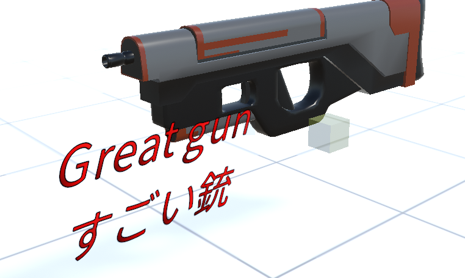

10.11. Text3D
Text3D is a 3D object. Unlike Text, it can be used in 3D space. Of course, it corresponds to the motion of this application.
Since it is a 3D object, it can be manipulated in the same way as OtherObject or Image.
Size
In Text3D, the size can be changed using the font size and the common property magnification (%), but the meaning is completely different.
- Font size:
Change the size of the text object itself.
- Scale:
Change the display size of text. You can further change the appearance by specifying the X and Y axes separately.
The size of the text itself does not change, so if the magnification is too high, it may appear rough.